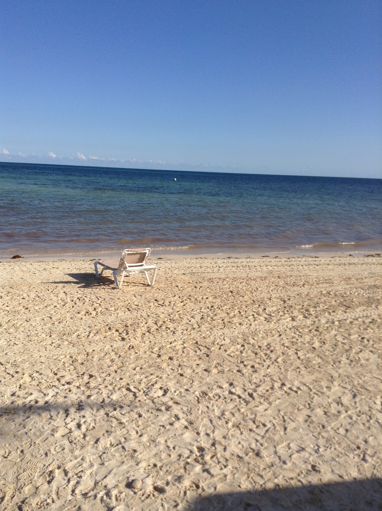
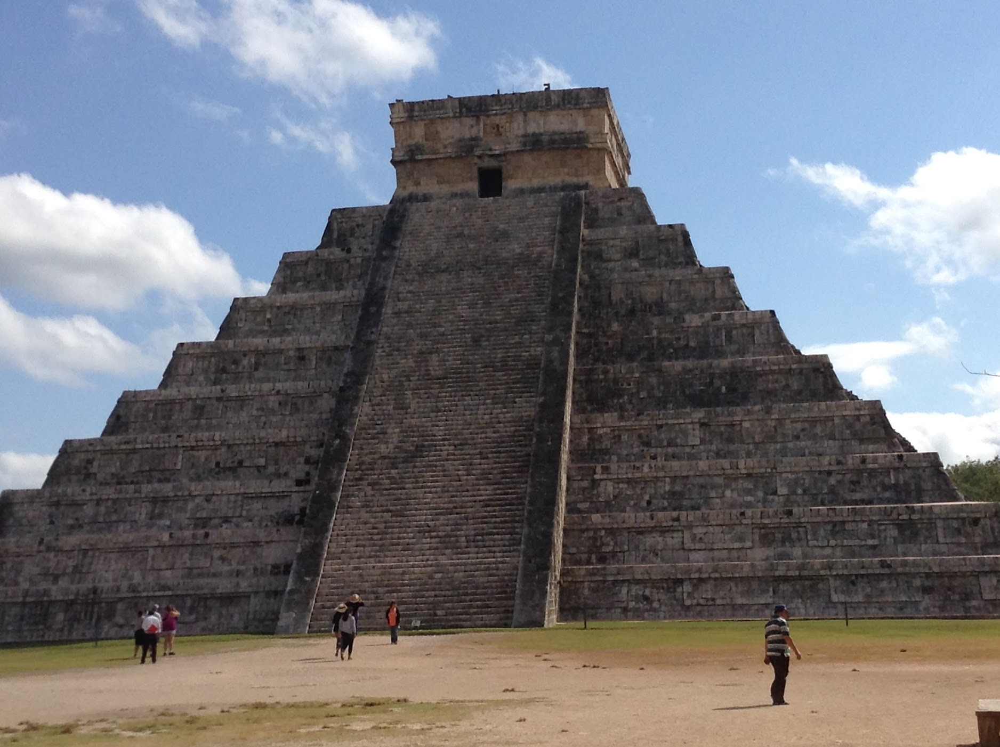

I traveled to Cancun, Mexico in January 2016 with my family. Even though it's been a while, this trip was very memorable!

We went in January, which was perfect, as we escaped the cold Virginia weather.

Our vacation consisted mostly of relaxing at the beach, and we even saw the Chichen Itza, one of the 7 Wonders of the World!
